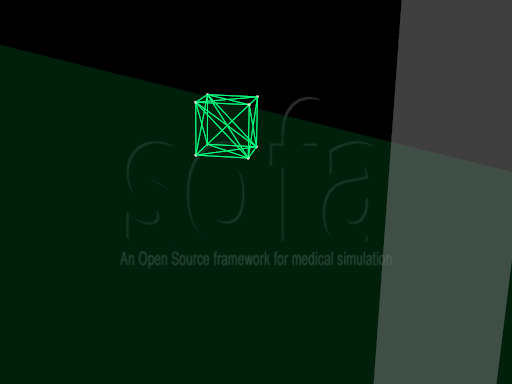

TutorialBasicCube.scn
Description:
In this tutorial, a deformable cube undergoes internal and external forces. This is one of the simplest scenes we can simulate using Sofa. We use it to introduce the component structure.
The shape is modeled using a MechanicalObject which desribes the particle states, and a Topology which describes how the particles are connected.
The forces are the MeshSpringForceField, which defines springs according to the edges of the mesh (the Topology), and the PlaneForceField which try to prevent the particles to cross planes.
The EulerImplicitSolver contains the algorithm used to update particle positions and velocities at each time step. It uses an auxiliary component, the CGLinearSolver, to solve equation systems.

See Also: